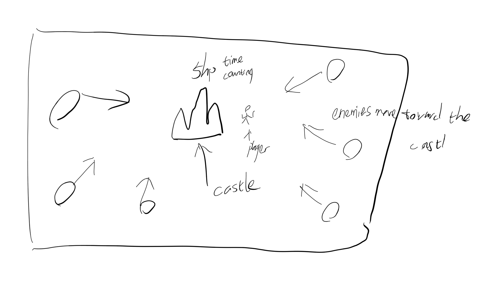
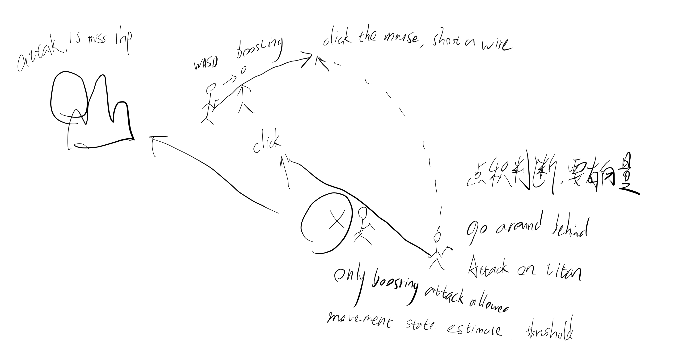
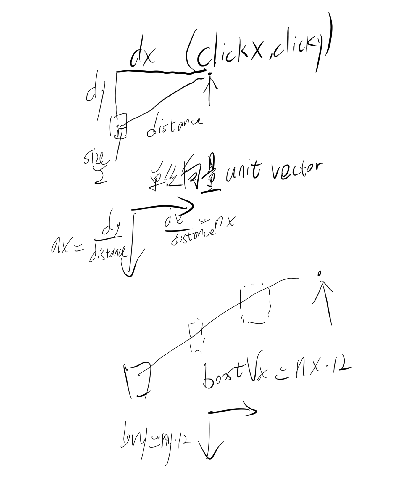
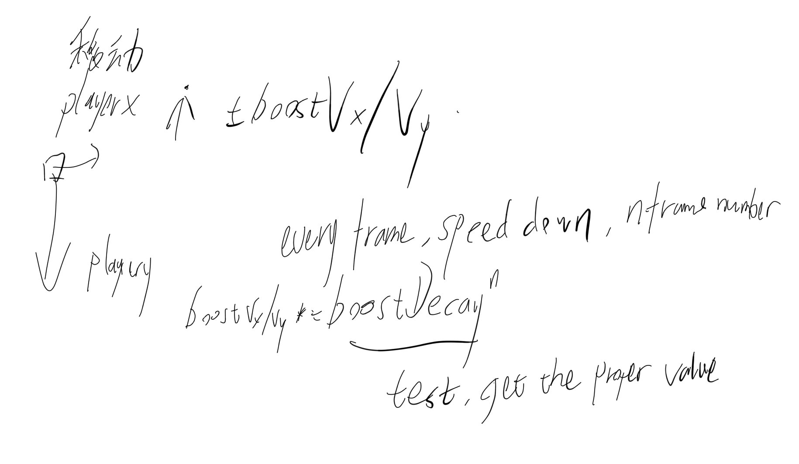
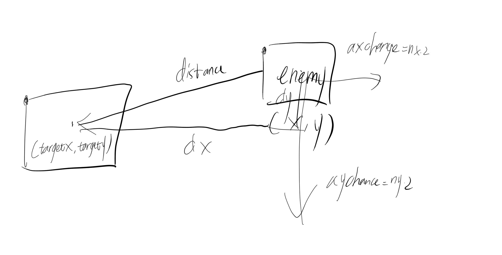
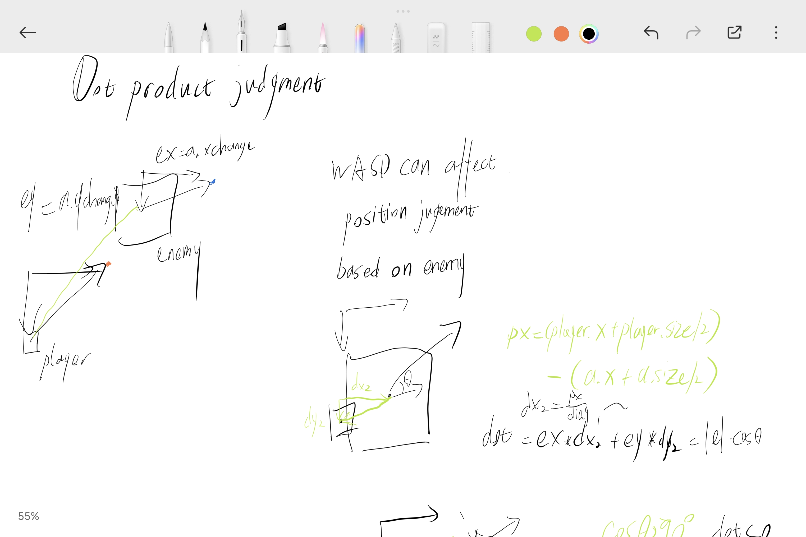
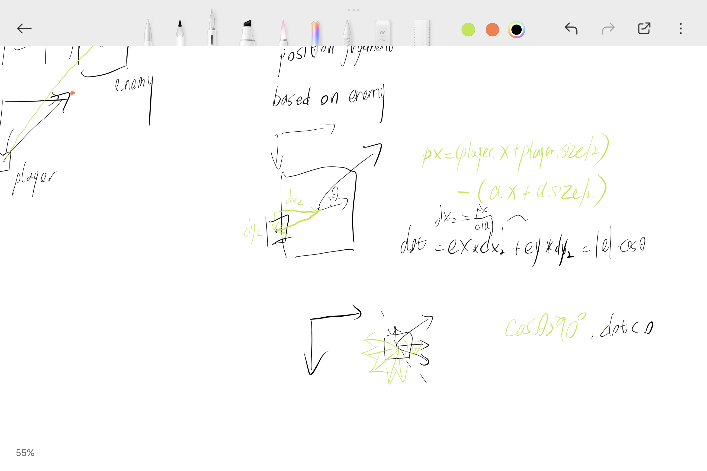

This game is mainly based on code from lecture on Tue 11 Mar by Professor Derek.
Study JS knowledge structure through JavaScript Tutorial Full Course - Beginner to Pro in order to have memory and general understanding about the usage of syntax
Study canvas syntax and structure through HTML5 Canvas CRASH COURSE for Beginners (last for 1 hour) also during the debug, I would review a lot in different time-stamps
pictures are from my instagram or from screen-capturing or CA in the first semester.
The enlightenment of attacking methods is from the anime Attack on Titan.
Below are my manuscripts for movements calculation:






